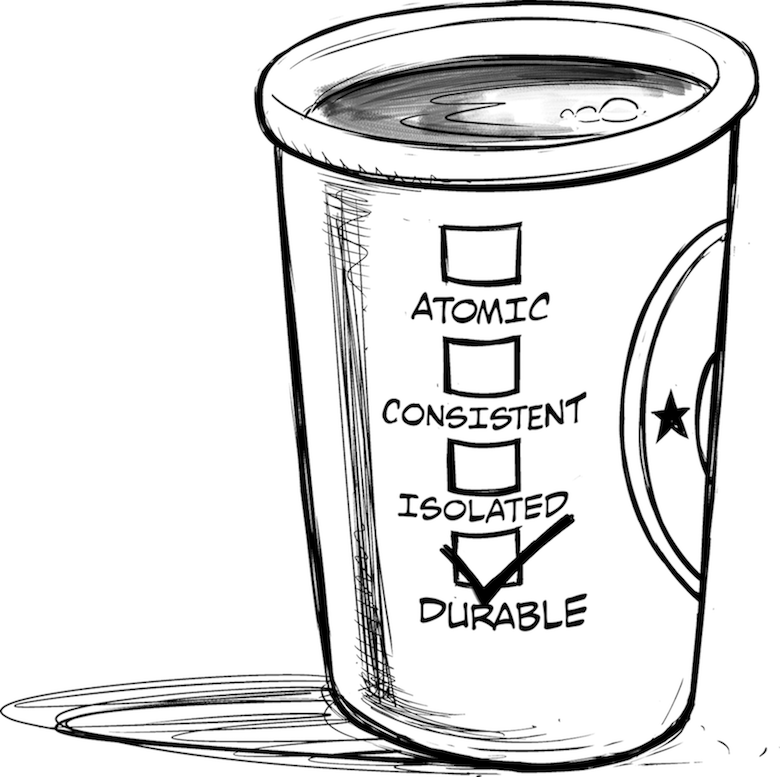

Learn About Distributed System Design While in the Queue!

When designing solutions, architects often look at technical solutions like ACID (Atomic, Consistent, Isolated, Durable) transactions and binary values in order to craft a well-defined and perfect system. In reality, though, designing complex systems isn’t that easy, so there’s one more source of design guidance that you should consider: the real world.1
You know you’re a geek when going to the coffee shop gets you thinking about interaction patterns between loosely coupled systems. This happened to me on a trip to Japan. Some of the more familiar sights in Tokyo are the numerous Starbucks coffee shops, especially in the areas of Shinjuku and Roppongi. After stretching my limited Japanese skills by muttering “Hotto Cocoa o Kudasai” (“A hot chocolate, please”), I returned to my bubble of foreigner-ness and started thinking about how Starbucks processes drink orders.
Starbucks, like most other businesses, is primarily interested in maximizing throughput of orders because more orders equal more revenue. Interestingly, the optimization for throughput results in a concurrent and asynchronous processing model: when you place your order, the cashier marks a coffee cup with the details of your order (e.g., tall, nonfat, soy, dry, extra hot latte with double shot) and places it into the queue, which is quite literally a queue of coffee cups lined up on top of the espresso machine. This queue decouples cashier and barista, allowing the cashier to keep taking orders even if the barista is momentarily backed up. If the store becomes busy, multiple baristas can be deployed in a competing-consumer scenario,2 meaning that they work off items in parallel without duplicating work.
Asynchronous processing models can be highly scalable but are not without challenges. Still waiting for my hot chocolate, I started thinking about how Starbucks dealt with some of these issues. Maybe we can learn something from the coffee shop about designing successful asynchronous messaging solutions?
Parallel and asynchronous processing causes drink orders to be not necessarily completed in the same order in which they were placed. This can happen for two reasons. First, order processing time varies by type of beverage: a blended smoothie takes more time to prepare than a basic drip coffee. A drip coffee ordered last might thus arrive first. Second, baristas might make multiple drinks in one batch to optimize processing time.
Starbucks therefore has a correlation problem: drinks that are delivered out of sequence must be matched up to the correct customer. Starbucks solves the problem with the same “pattern” used in messaging architectures: a correlation identifier3 uniquely marks each message and is carried through the processing steps. In the US, most Starbucks use an explicit correlation identifier by writing your name on the cup at the time of ordering, calling it out when the drink is ready. Other countries might correlate by the type of drink. When I had difficulties in Japan understanding the baristas calling out the types of drinks, my solution was to order extra-large “venti” drinks because they’re uncommon and therefore easily identifiable, that is, “correlatable.”
Exception handling in asynchronous messaging scenarios presents another challenge. What does the coffee shop do if you can’t pay? They will toss the drink if it has already been made or otherwise pull your cup from the “queue.” If they deliver you a drink that’s incorrect or unsatisfactory, they will remake it. If the machine breaks down and they cannot make your drink, they will refund your money. Apparently, we can learn quite a bit about error-handling strategies by standing in the queue!
Just like Starbucks, distributed systems often cannot rely on two-phase-commit semantics that guarantee consistent outcomes across multiple actions. They therefore employ the same error-handling strategies.
The simplest error-handling strategy is doing nothing. If the error occurs during a single operation, you just ignore it. If the error happens during a sequence of related actions, you can ignore the error and continue with the subsequent steps, ignoring or discarding any work done so far. This is what the coffee shop would do when a customer is unable to pay: discard the drink and move on.
Doing nothing about an error might seem like a bad plan at first, but in the reality of a business transaction, this option might be perfectly acceptable: if the loss is small, building an error correction solution is likely more expensive than just letting things be. When humans are involved, correcting errors also has a cost and might delay serving other customers. Moreover, error handling can lead to additional complexity—the last thing you want is an error-handling mechanism that has errors. So, in many cases “simple does it.”
I worked for a number of ISP providers who would choose to write off errors in the billing/provisioning cycle. As a result, a customer might end up with active service but would not get billed. The revenue loss was small enough that it didn’t hurt the business and customers rarely complained about getting free service. Periodically, they would run reconciliation reports to detect the “free” accounts and close them.
When simply ignoring an error won’t do, you might want to retry the failing operation. This is a plausible option if there’s a realistic chance that a renewed attempt will actually succeed; for example, because a temporary communications glitch has been fixed or an unavailable system has restarted. Retrying can overcome intermittent errors, but it doesn’t help if the operation violates a firm business rule. Starbucks will retry to make your beverage if it’s not to your liking but they won’t if the power is out.
When encountering a failure in a group of operations (i.e., “transaction”), things become simpler if all components are idempotent, meaning they can receive the same command multiple times without duplicating the execution. You can then simply reissue all operations because the receivers that already completed them will simply ignore the retried operation. Shifting some of the error-handling burden, i.e., detecting duplicate messages, to the receivers thus simplifies the overall interaction.
It’s amazing how frequently a basic retry operation succeeds in systems that were built out of zeros and ones. The common saying that defines insanity as “doing the same thing over and over again and expecting different results” apparently doesn’t apply to computer systems.
The final option to put the system back into a consistent state after a failed operation is to undo the operations that were completed so far. Such “compensating actions” work well for monetary transactions that can recredit money that has been debited. If the coffee shop can’t make the coffee to your satisfaction, it will refund your money to restore your wallet to its original state.
Because real life is full of failures, compensating actions can take many forms, such as a business calling a customer to ask them to ignore a letter that has been sent or to return a package that was sent in error. The classic counter-example to compensating an action is sausage making. Some actions are not easily reversible.
All of the strategies described so far differ from a two-phase commit that relies on separate prepare and execute phases. In the Starbucks example, a two-phase commit would equate to waiting at the cashier desk with the receipt and the money on the table until the drink is finished. Once the drink is added to the items on the table, money, receipt, and drink can change hands in one swoop. Neither the cashier nor the customer would be able to leave until this “transaction” is completed.
Using such a two-phase-commit approach would eliminate the need for additional error-handling strategies, but it would almost certainly hurt Starbucks’s business because the number of customers it can serve within a set time interval would decrease dramatically. This is a good reminder that a two-phase-commit approach can make life a lot simpler, but it can also hurt the free flow of messages (and therefore the scalability) because it has to maintain stateful transaction resources across multiple, asynchronous actions. It’s also an indication that a high-throughput system should be optimized for the happy path instead of burdening each transaction for the rare case when something goes wrong.
Despite working asynchronously, the coffee shop cannot scale infinitely. As the queue of labeled coffee cups gets longer and longer, Starbucks can temporarily reassign a cashier to work as a barista. This helps reduce the wait time for customers who have already placed an order while exerting backpressure to customers still waiting to place their order. No one likes waiting in line, but not yet having placed your order provides you with the option to leave the store and forgo the coffee or to wander to the next, not-very-far-away coffee shop.
The coffee shop interaction is also a good example of a simple but common conversation pattern4 that illustrates sequences of message exchanges between participants. The interaction between two parties (customer and coffee shop) consists of a short synchronous interaction (ordering and paying) and a longer, asynchronous interaction (making and receiving the drink). This type of conversation is quite common in purchasing scenarios. For example, when an order is placed on Amazon, the short synchronous interaction assigns an order number, whereas all subsequent steps (charging credit card, packaging, shipping) are performed asynchronously. Customers are notified via email (asynchronous) when the additional steps complete. If anything goes wrong, Amazon usually compensates the customer (refunds payment) or retries (resends the lost goods).
A coffee shop can teach you even more about distributed system design. When Starbucks was relatively new, customers were both enamored and frustrated by the new language they had to learn just to order a coffee. Small coffees are now “tall,” while a large one is called “venti.” Defining your own language is not only a clever marketing strategy but also establishes a canonical data model5 that optimizes downstream processing. Any uncertainties (soy or nonfat?) are resolved right at the “user interface” by the cashier, thus avoiding a lengthy dialogue that would burden the barista.
The real world is mostly asynchronous: our daily lives consist of many coordinated but asynchronous interactions, such as reading and replying to email, buying coffee, etc. This means that an asynchronous messaging architecture can often be a natural way to model these types of interactions. It also means that looking at daily life can help design successful messaging solutions. Domo arigato gozaimasu!6
1 This chapter was published (in slightly different form) in IEEE Software, Vol. 22, and Best Software Writing, ed. J. Spolsky (Apress).
2 Gregor Hohpe, “Competing Consumers,” Enterprise Integration Patterns, https://oreil.ly/NShD-.
3 Gregor Hohpe, “Correlation Identifier,” Enterprise Integration Patterns, https://oreil.ly/NkR28.
4 Gregor Hohpe, “Conversation Patterns,” Enterprise Integration Patterns, https://oreil.ly/g-wvQ.
5 Gregor Hohpe, “Canonical Data Model,” Enterprise Integration Patterns, https://oreil.ly/8SU8U.
6 “Thank you very much!”